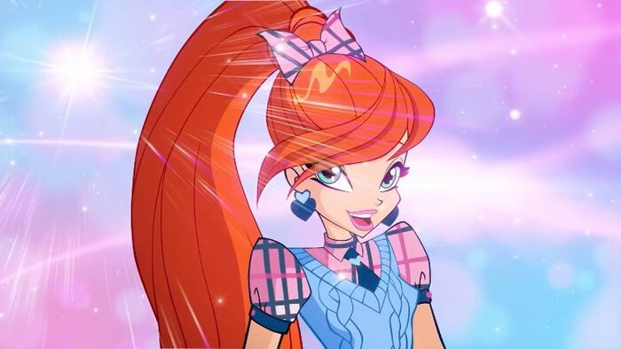

Блум верна своим подругам и готова отдать за них собственную жизнь. Она порывиста и импульсивна, но очень добра.
Блум очень любит своего кролика Кико.
Блум очень умная, догадливая, сильная фея и её все любят - родители, подруги, друзья. Ещё у Блум есть парень Скай – наследный принц Эраклиона.